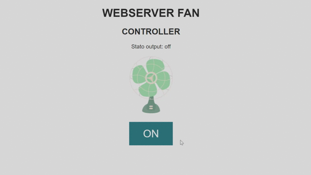

WEBSERVER_FAN-CONTROLLER


Introduzione
Lo sketch (compatibile con schede basate su ESP8266) si occupa di hostare un webserver che permette di controllare una ventola a distanza.
Per accedere al web server lo sketch si connette ad una rete WiFi
Guida all'uso
- Modificare ssid (variabile
ssid) e password (variabilepassword) nella sezione variabili per farle corrispondere a quelle della rete WiFi a cui la scheda si connettera' - Modificare il pin su cui effettuare l'attuazione (variabile
outPin) - Se desiderato e' possibile modificare lo stile CSS (variabili
htmlCSS,btnCSS,offBtnCSS,onBtnCSS) e/o le immagini/gif (variabilionImg,offImg)Attenzione: se si desidera modificare le immagini occorre trovare immagini di dimensioni ridotte e ottimizzarle per occupare meno risorse possibili alla scheda. In caso contrario lo sketch potrebbe non compilarsi.
- Attenersi alle istruzioni del costruttore della scheda per scegliere le impostazioni per poter caricare lo sketch sulla scheda.
- Caricare lo sketch sulla scheda e aprire la seriale: apparira' l'ip da utilizzare per accedere al web server.
Nota: se si imposta la variabile
boolDebuga false l'ip non verra' visualizzato su seriale, occorrera' utilizzare un software per analizzare la rete per rilevare il dispositivo.
Descrizione
Per la descrizione del codice visitare la pagina di documentazione generata da Doxygen [cliccando qui]()
Requisiti
- Arduino IDE configurato per caricare sketch su schede basate su ESP8266
- dispositivo da attuare (ventola, led,...)
Changelog
2020-04-02 01_01:
Primo commit
Autori
- Morini Martino
- Fraccari Luca
- Zenaro Stefano